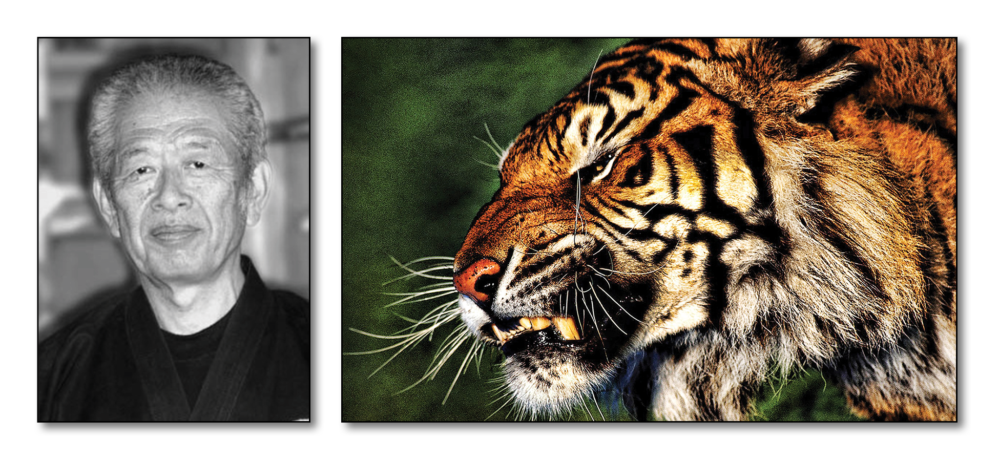

"School of the Jewel Tiger" - Dr. Hatsumi is the 28th Soke
Overview:
Gyokko Ryû Koshijutsu is the oldest of the Bukinkan Schools. It is known for its koshijutsu which places an emphasis on striking weak and vital areas of the body such as muscles and soft organs and for using fingers and thumbs for ripping and tearing. The oldest of the nine traditions, this school forms much of the fundamentals for the Bujinkan training including the kihon happo, muto dori, and sanshin no kata. Its movement favors indirect attacks which tend to be spherical and small techniques that often flank the opponent. The ryu is a complete fighting method encompassing koshijutsu which consists mainly of strikes and joint locks with some throws, along with other skills such as Shuriken jutsu (throwing blades), Ken jutsu (sword arts), and Kyoketsushoge (sickle and weighted rope). It has been said that Gyokko Ryu along with Koto Ryu make up 50% of Bujinkan training because of how well they compliment each other using direct and indirect methods of attack. Cho Gyokko originally founded Gyokko Ryu when he fled China during the Tang Dynasty around 900 AD.
The Nine Rules of the Gyokko Ryû:
Lineage of Gyokko Ryu: